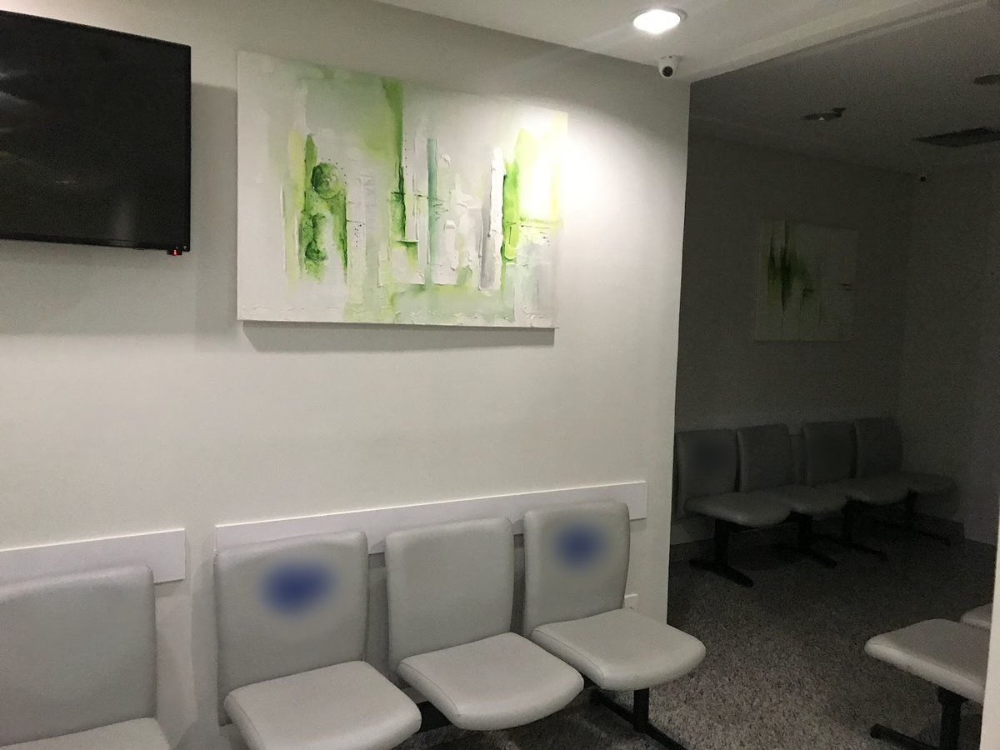

Ginecologista e obstetra · CRM-BA 10199 · RQE 2685
Dra. Katarina Moreira
Ginecologia e obstetrícia na Pituba, em consultório próprio desde 1998.
Da consulta de rotina ao pré-natal, da saúde íntima à menopausa: o acompanhamento ginecológico em cada fase, no Centro Odonto Médico Linus Pauling, sala 1505.
5,0★★★★★35 avaliações no GooglePor onde começar
O que trouxe você até aqui?
Escolha o assunto e leia com calma antes da consulta. Cada página traz informação geral e o que a própria Dra. Katarina já escreveu sobre o tema; a indicação de qualquer tratamento é individual, definida em consulta.
Calores, sono, humor: será a menopausa?
Climatério, sintomas, acompanhamento e terapia hormonal com indicação individual.
Menopausa e climatérioRotinaPreciso fazer meus exames de rotina
Preventivo, mamas, vacinas e o que levar para a consulta.
Consulta e preventivoSaúde íntimaTenho um incômodo íntimo
Corrimento, coceira, ardor, secura e dor na relação.
Saúde íntimaGestaçãoEstou grávida ou planejando
Do planejamento às consultas do pré-natal.
Pré-natalMenopausa sem pausas
O nome do site dela virou um mapa.
“Menopausa sem pausas” era o título do site que a Dra. Katarina manteve até 2025. Ali, ela listava os sintomas que levam as mulheres ao consultório nessa fase. Eles estão aqui em roda: toque em um deles para ler a página certa.
Nem toda mulher sente todos, e nem todo sintoma é da menopausa. Por isso a conversa começa pela história de cada uma.
Fonte: Site antigo “Menopausa sem pausas” (2024–2025), cópia de janeiro de 2025 no Internet Archive.
Desde 1998
Consultório próprio e três hospitais.
Cada data vem de um registro público: a Receita Federal, para o consultório, e o CNES, o cadastro nacional dos estabelecimentos de saúde, para os vínculos.

Antes: medicina e residência em ginecologia e obstetrícia na UFBA, de 1985 a 1993, segundo o perfil dela no LinkedIn.
- 1998Abre o consultório
Sócia-administradora desde a fundação, em 21 de setembro de 1998, da CEGOB, clínica ginecológica e obstétrica do Centro Odonto Médico Linus Pauling, na Pituba.
Receita Federal · CNPJ 02.758.525/0001-16 - 2007No CNES do consultório
Registrada como ginecologista e obstetra do CEGOB desde julho de 2007, primeira competência do histórico, sem interrupção até hoje.
CNES · histórico de vínculos - 2010–2025Hospital da Sagrada Família
Ginecologista e obstetra do hospital de março de 2010 a junho de 2025.
CNES · histórico de vínculos - 2020Hospital Geral do Estado
Ginecologista e obstetra do HGE, servidora estatutária desde setembro de 2020.
CNES · competência 09/2026 - 2024Hospital Mater Dei Salvador
Ginecologista e obstetra do Mater Dei Salvador desde setembro de 2024.
CNES · competência 09/2026
Nas palavras dela
“Entender o que está acontecendo no seu corpo é o primeiro passo para cuidar melhor de você.”
Legenda de vídeo no Instagram @drakatarinamoreira, novembro de 2024 (lida no feed do site antigo, cópia no Internet Archive).
No site antigo, ela descrevia o próprio cuidado como algo que vai “além do tratamento dos sintomas e saúde íntima, se envolvendo em todas as áreas relevantes, desde a nutrição até a saúde cardiovascular”.
Conheça a médicaAvaliações
Escuta, clareza e cuidado.
5,0 no Google, com 35 avaliações · 13 opiniões na Doctoralia
Dra. Katarina demonstrou uma escuta extremamente atenta, humana e acolhedora. Explicou com clareza os sintomas e as possibilidades de tratamento do meu caso.
Atenciosa, estudiosa, atualizada, comprometida, escuta extremamente atenta, humana e acolhedora.
Desde o acompanhamento da minha gestação, sempre demonstrou cuidado, atenção e dedicação em cada consulta.
Experiência ótima, desde a recepção a consulta com a Dra Katarina.
Olhou tudo, colocou todos meus exames, vacinas e minha saúde em dia.
Competente, atenciosa, simpática e preocupada com todos os detalhes da vida e sintomas do paciente.
Gosto muito da escuta atenta e da objetividade do atendimento.
Trechos de avaliações públicas na ficha do Google e na Doctoralia, com nome abreviado e a data informada pela plataforma.
Em cada fase
Da consulta de rotina aos 45 e depois.
Ginecologia e obstetrícia acompanham a mulher por muitas fases da vida. Estas são as cinco páginas deste site, na ordem em que costumam aparecer.
Conteúdos
O que ela já explicou.
Trechos das legendas da Dra. Katarina no Instagram @drakatarinamoreira, de novembro de 2024. Cada cartão leva à página do site sobre o assunto.
Fogachos inesperados? Alterações no sono? Esses sintomas iniciais do climatério podem passar despercebidos, mas entender o que está acontecendo no seu corpo é o primeiro passo para cuidar melhor de você.Legenda dela no Instagram · nov/2024Sono
Dormir bem muda tudo! […] Esse vídeo não substitui a consulta médica, sendo meramente informativo.Legenda dela no Instagram · nov/2024Saúde íntima
Você sabia que reconhecer os sintomas de doenças íntimas é fundamental para a saúde da mulher? […] Juntas, podemos promover a informação e o cuidado na ginecologia.Legenda dela no Instagram · nov/2024Atividade física
A menopausa é uma fase de transformação, mas isso não significa que devemos desacelerar! A prática regular de atividade física pode ser um grande aliado para minimizar os sintomas da menopausa e melhorar nossa qualidade de vida.Legenda dela no Instagram · nov/2024
O consultório
Linus Pauling, sala 1505.
Na Pituba, no endereço da ficha do Google, do site antigo e da Receita Federal. A consulta é com hora marcada.
Consultório da Dra. Katarina MoreiraCentro Odonto Médico Linus Pauling · R. Altino Serbeto de Barros, 119, sala 1505 · Pituba · Salvador – BA · CEP 41830-492
Horário de atendimento
Horário da ficha do consultório no Google. A consulta é com hora marcada: confirme o dia e o horário com a equipe.
WhatsApp do consultório: (71) 2132-6160 · Telefone: (71) 3353-7839

Dúvidas frequentes
Perguntas comuns
Onde fica o consultório?
No Centro Odonto Médico Linus Pauling: R. Altino Serbeto de Barros, 119, sala 1505, Pituba, Salvador – BA. Veja o mapa e como chegar.
Como agendar uma consulta?
Pelo WhatsApp do consultório, (71) 2132-6160, ou pelo telefone (71) 3353-7839. A consulta é com hora marcada.
Qual é o horário?
A ficha do consultório no Google informa segunda a quinta, das 8h às 19h, e sexta, das 8h às 17h. Confirme o dia e o horário com a equipe ao agendar.
Ela atende convênio?
A Doctoralia informa que a Dra. Katarina aceita Unimed. Confirme o seu plano com a equipe antes da consulta.
A Dra. Katarina acompanha a menopausa?
Sim. Menopausa e climatério são o tema do site que ela manteve até 2025, “Menopausa sem pausas”, e das legendas dela no Instagram. Veja a página sobre menopausa.
Ela também faz pré-natal?
Ela é ginecologista e obstetra, e a primeira consulta que oferece na Doctoralia é de ginecologia e obstetrícia. Veja a página do pré-natal.
Agende
Uma consulta com a Dra. Katarina, na Pituba.
Consultório na sala 1505 do Centro Odonto Médico Linus Pauling. Fale com o consultório pelo WhatsApp (71) 2132-6160 ou pelo telefone (71) 3353-7839.